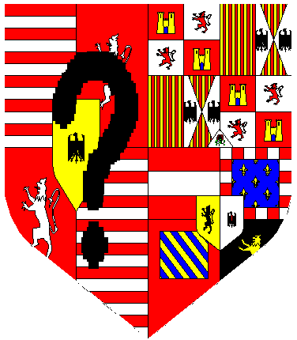
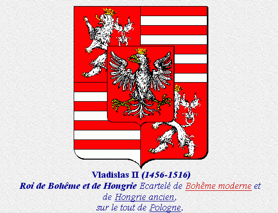
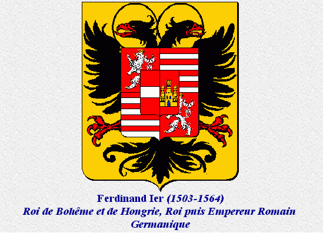
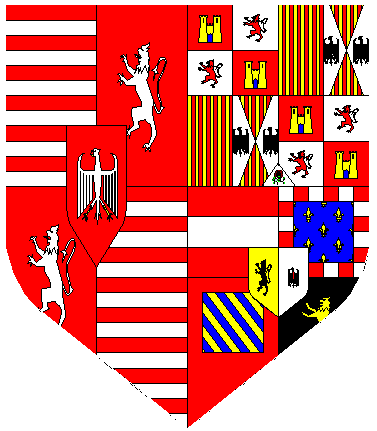

Opzoeking van een onbekend wapen van Hongarije-Bohemen en Habsburg
Op een reproduktie van een oude kaart van de Stad Antwerpen, (Virgilius Bononiensis , Urbs Antverpia) vond ik een wapenschild dat ik niet zo onmiddelijk kon thuisbrengen. De kaart is gedateerd op 1565, en bevat naast het wapen van de Stad ook de wapens van oa de Spaanse koning Filips II, het hertogdom Brabant, het markgraafschap Antwerpen en het hieronder voorgestelde wapen.

Het rechter gedeelte (sinister) is duidelijk het deel voor een vrouwelijk lid van de Spaanse Habsburgers. Volgens de heraldische regels dragen de dochters het wapen van hun vader en plaatsen het naast dit van hun echtgenoot. (impalement)
Op de kaart staan de velden niet ingekleurd maar met een beetje fantasie kwam ik voor het linker deel (dexter, het deel voor de mannelijke echtgenoot), vlug uit op de dubbelmonarchie Hongarije-Bohemen.
Beide koninkrijken kwamen samen onder Jagiello (Jagellan). Sinds 1471 was hij koning van Bohemen en hij werd ook koning van Hongarije in 1490 onder de naam Vladislav II.

gekwartierd Bohemen en Hongarije, met hartschild Polen
Hij wordt opgevolgd door zijn zoon Lodewijk II in 1516. Deze was samen met zijn zuster Anna sterk verbonden met de Habsburgers.
Beiden waren zij immers getrouwd met ook een broer en zus van de Habsburgers: Lodewijk II koning van Hongarije-Bohemen met Maria van Habsburg (dochter van Filips de Schone) en Anna van Hongarije met Ferdinand I (tweede zoon van Filips de Schone en jongere broer van keizer Karel V).
Op het eerste zicht kloppen de data niet om het onbekende wapen aan deze Maria van Habsburg toe te kennen. Lodewijk II stierf namelijk in 1526 in de Slag bij Mohacs tegen de Turken, en, Maria blijft regentes van Hongarije tot ze op vraag van haar broer keizer Karel V naar de Nederlanden komt als regentes. (als Maria van Hongarije komt ze aan op 14 maart 1531). Echter op 25 oktober 1555 stopt ze net als haar broer haar regering en vertrekt ze samen met hem naar Spanje, waar ze in 1558 overlijdt.
Bij de dood van Lodewijk II wordt zijn schoonbroer (zwager) Ferdinand I van Habsburg koning van Hongarije - Bohemen via zijn vrouw koningin Anna van Hongarije. Hij bestuurde ook voor zijn broer de Oostenrijkse erflanden en was de plaatsvervanger in het Rijk. Hij werd erkent als Rooms Koning in 1531 en werd in 1556 keizer. Hij sterft in 1564.

Hij wordt opgevolgd als keizer door zijn zoon Maximiliaan II in 1564. Deze was getrouwd met zijn nicht Maria, een dochter van keizer Karel V.
Aangezien de data niet klopte voor Maria van Hongarije, dacht ik dat het misschien aan deze Habsburgse dame kon toegeschreven worden.
Zij mocht immers het wapen van haar vader voeren, namelijk Spanje en de Nederlanden en haar echtgenoot Maximiliaan II dat van Bohemen-Hongarije. Het hartschild met de adelaar gokte ik zwart op gouden veld, (is niet gekleurd op de kaart die ik heb) als toevoeging als Rooms koning, een titel die de erfgenaam van de keizer draagt, of zelfs als keizerlijke toevoeging zelf, aangezien Maximiliaan zelf keizer wordt in 1564.
Als antwoord op mijn vraag in de usegroup rec.heraldry, merkte Francois Velde terecht op dat de keizerlijke toevoeging erin bestaat dat het wapen getoond wordt als een schild op de borst van de keizerlijke adelaar (zoals het schild hierboven van Ferdinand I) en niet zoals ik gokte dat het wapen vermeerderd wordt met een hartschild. Ook merkte hij op dat Maximiliaan II en zijn vrouw Maria hun wapens niet verenigden zoals ik dacht, maar dat ze een variante voerden van de Habsburgse kwartieren.
Volgens Francois Velde (van heraldica.org) is het zeer goed mogelijk dat de kaart reeds voor 1555 gedrukt werd en waar de graveerder bij latere uitgaven naast het plan zelf enkel de datum veranderde en de wapenschilden onveranderd liet.
Bij nadere studie van de kaart blijkt inderdaad dat een groot deel van de kaart en misschien dus ook de schilden, getekend werd rond 1550.
Het onbekende wapen kan alleen maar toegeschreven worden aan Maria van Hongarije, landvoogdes der Nederlanden van 1530 tot 1555, zuster van keizer Karel V.
